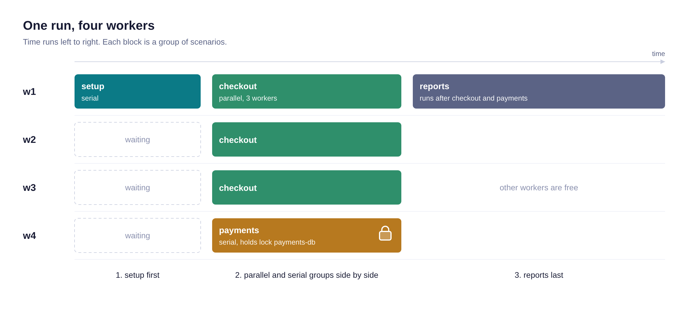

Why bddr
bddr is a test runner for automation suites written as Gherkin specs. It keeps the readable feature files and adds the control that large UI and API suites need: what runs in parallel, what must run in order, and what to do when a test fails.
What bddr is
You write scenarios in .feature files and the steps behind them in TypeScript. bddr finds the scenarios, builds a schedule, runs them on workers, retries what should be retried and writes the reports.
It is an automation framework with BDD-style specs, not a methodology. Use the specs to share what a test does with people who do not read code. Use the runner to get a fast, stable suite.
What you get
| You need to | bddr gives you | Read |
|---|---|---|
| Run independent tests side by side | workers and an optional process pool: one Node.js process per worker. | Worker processes |
| Keep a journey in order inside a parallel run | @serial on a feature. Other features keep running. | Serial features |
| Run setup first, reports last | Groups with dependsOn, plus @dependsOn between scenarios. | Groups, Dependencies |
| Stop two tests from using the same database at once | @lock:name, @exclusive and @priority:n. | Locks and priority |
| Survive a flaky environment without hiding it | Scenario, group and run retries. A pass after a failure is reported as flaky. @quarantine keeps a known-bad test visible without failing the build. | Retries and flaky tests |
| Split a suite across CI machines | --shard i/n, balanced by recorded duration. | Sharding in CI |
| Drive test data from files | @data: with CSV, TSV, JSON, YAML and Excel. | Data files |
| Use a real browser or API client | Plugins that expose the full Playwright, Selenium or axios API as fixtures. | Playwright, Selenium, axios |
| Show results to a team | A single-file HTML report with a timeline, dependency graph and history. JUnit XML, Cucumber JSON and an NDJSON event stream. | Reporters |
One run, parallel and serial together
Most suites mix work that can run side by side with work that cannot. A login test and a catalogue test are independent. A checkout journey is not: add to basket, pay, see the receipt. bddr plans both in one run, so you do not split the suite into separate jobs.

How it is built
Four small packages, a plan that is plain data, and plugins for browsers and API clients. Architecture shows how they fit together.
Who it is for
- Teams with a UI and API suite that has outgrown one sequential run.
- QA engineers who write specs and want developers to share the step code.
- Teams moving from Cucumber.js who want orchestration without writing their own scripts. See Coming from Cucumber.js.
When another tool fits better
- You write unit tests. Use your language's unit test runner.
- You only need a handful of browser tests and nobody reads the specs. A plain Playwright Test project is simpler.
- You need a stable 1.0 today. bddr is at version 0.1 and is not on npm yet. You build it from the repository. See Getting started.
Current state
The TypeScript runtime, CLI, reporters and the Playwright, Selenium and axios plugins are working. A Java port is planned and will use the same configuration, event stream and conformance tests. Planned work, such as a VS Code extension, is listed in docs/STATUS.md in the repository.